【2026年 · AI实验室 · 远景】
屏幕上的参数还在跳动。我盯着神经网络的损失函数曲线，手指悬在回车键上方。
「再调一次学习率，这个模型就该收敛了……」
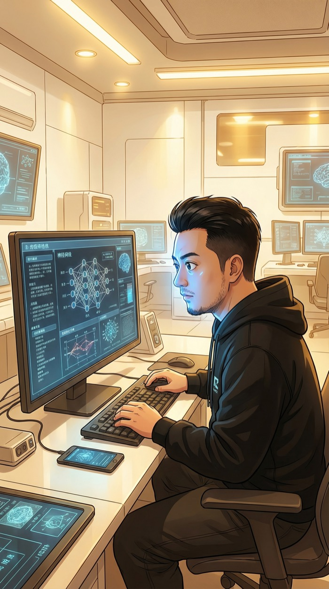
【2026年 · AI实验室 · 远景】
屏幕上的参数还在跳动。我盯着神经网络的损失函数曲线，手指悬在回车键上方。
「再调一次学习率，这个模型就该收敛了……」
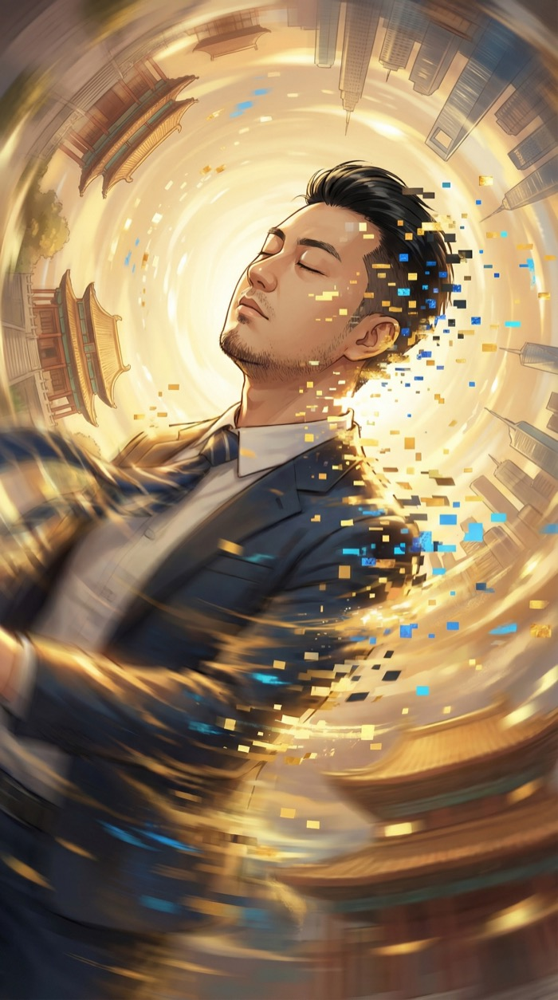
【意识断裂 · 时空通道】
回车键按下的瞬间，世界碎了。不是屏幕碎了——是整个现实像像素一样四散崩解。
「等等……这不是bug，这是……什么？」
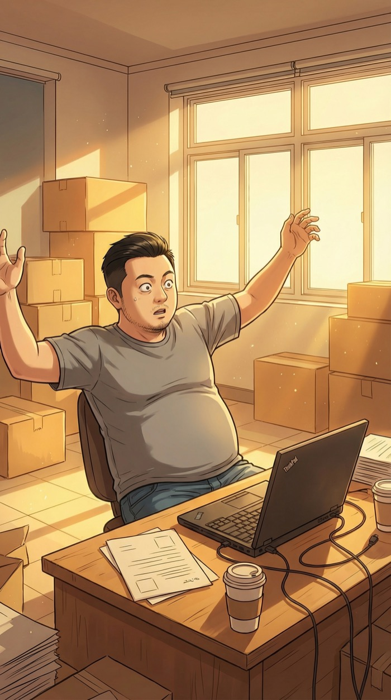
【2012年8月 · 上海张江高科技园区 · 小型办公室 · 中景】
一束温暖的晨光打在我脸上，把我从混沌中拽出来。睁开眼，映入眼帘的不是实验室的4K显示器——而是一台……ThinkPad？
「这个键盘手感……T420？这玩意儿我2012年用过……」
等等。2012年？
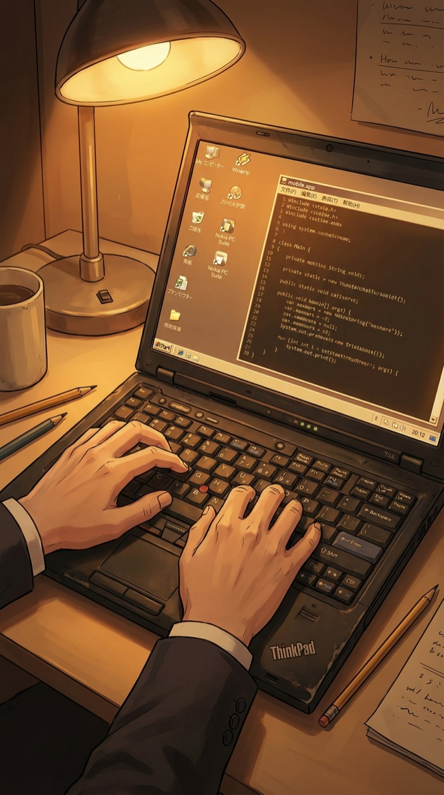
【ThinkPad屏幕特写】
屏幕上是一个半成品App的代码。Java写的Android应用，包名还是我当年创业时用的那个。我的手不受控制地颤抖起来。
「这不可能……这段代码，我记得每一行。」
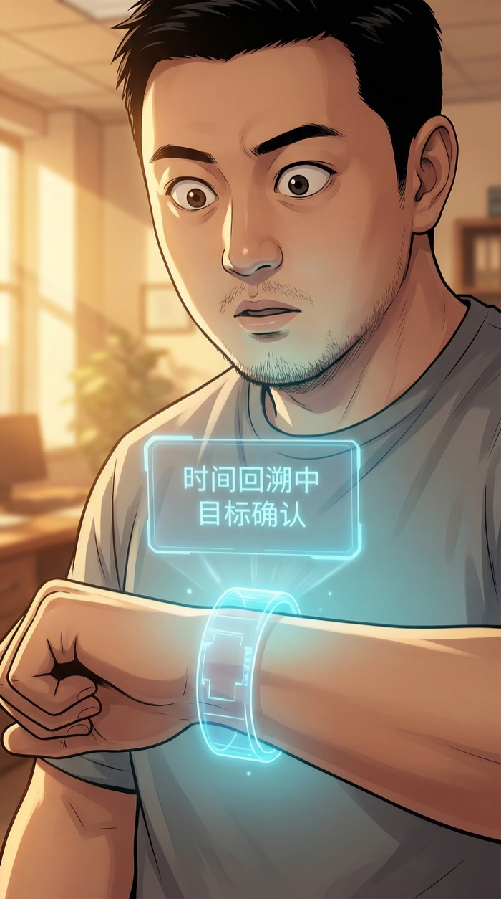
【手腕特写 · 全息手环激活】
手腕上突然一阵温热。一圈蓝色的半透明光环凭空浮现，缓缓旋转，然后展开成一个全息界面——
「叮——创业系统v1.0已激活。宿主：朱江。时间锚点：2012年8月15日。」
"什么鬼？！"
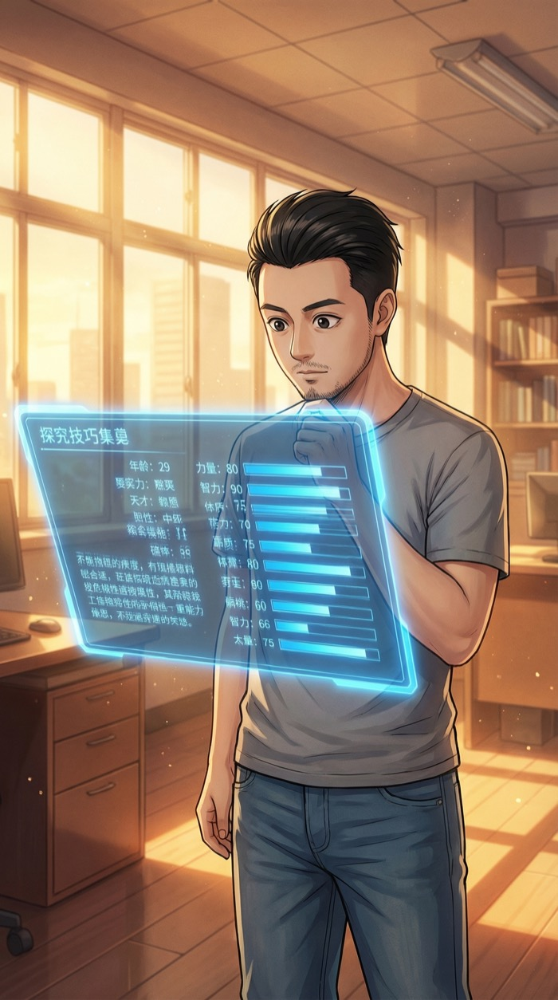
【全息面板展示 · 能力值扫描】
「宿主能力扫描完毕——
商业直觉: S
技术理解: A
社交能力: B
体力: C
综合评价：有脑子但跑不动。」
我盯着这个悬浮在空气中的面板。如果这是梦，细节也太真实了。如果不是梦……
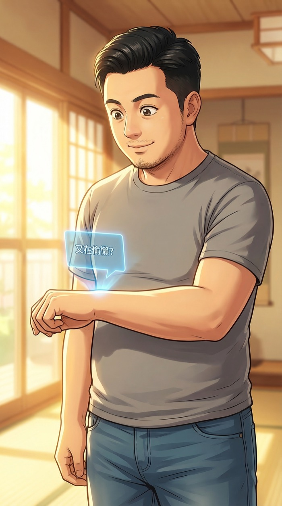
【中景 · 系统毒舌】
「检测到宿主呆滞时间超过30秒。温馨提示：在2012年发呆不会提升估值。」
"……你能不能正常点？"
「我很正常。不正常的是一个2026年的AI创业者，正坐在2012年的办公室里跟一个全息手环说话。」
好吧，它说得有道理。
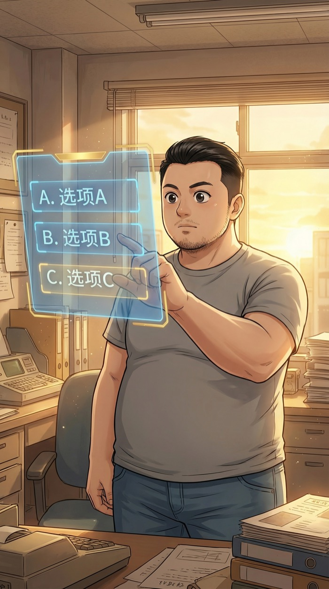
【全息决策面板 · 选择赛道】
「内容分发。这个赛道我太熟了——因为我知道它未来会改变整个信息生态。」
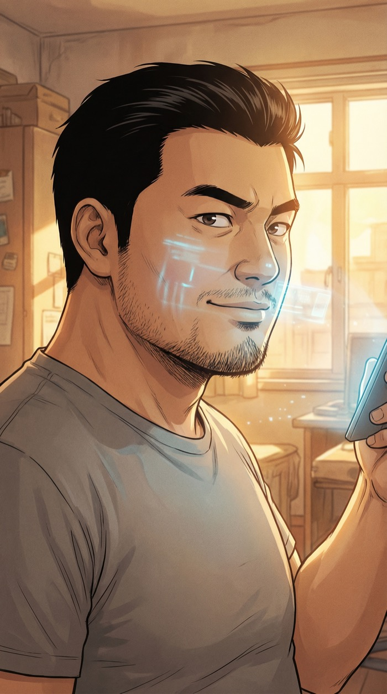
【特写3/4侧面 · 自信微笑】
「选了最难的赛道。果然，蠢是跨时空传播的。」
我没理它。嘴角不自觉地上扬。
「2012年的内容分发市场……一片空白。而我，知道正确答案。」
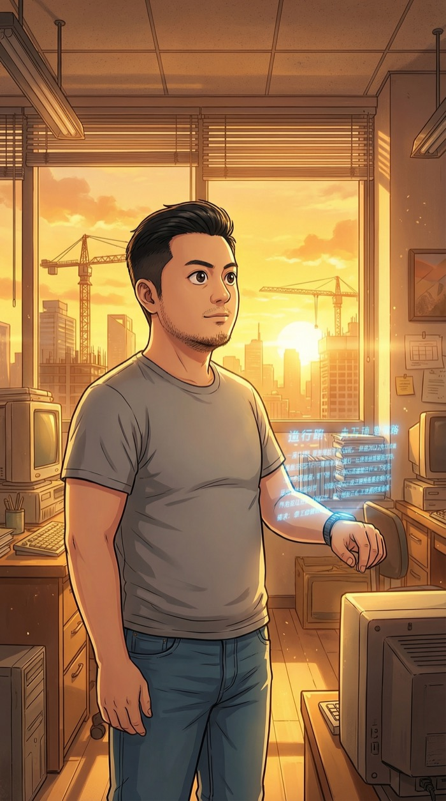
【远景 · 窗前 · 2012上海天际线 · 金色夕阳】
我走到窗边。张江园区的天际线在金色的夕阳下铺展开来，到处是在建的工地和脚手架。2012年的中国，一切都在蓬勃生长。
「这一次，我不会只是旁观者。」
手腕上的蓝光安静地闪烁着，像是在等我迈出第一步。
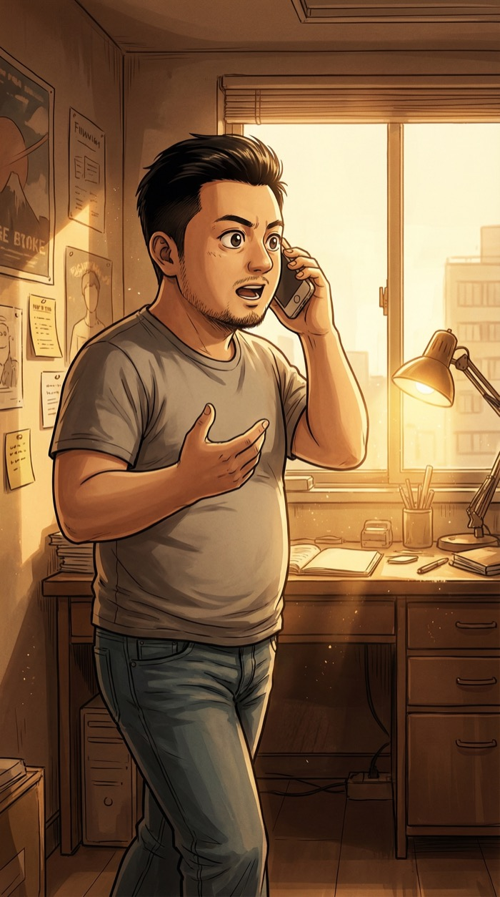
【办公室 · 暖金色午后光 · 中景】
我翻出手机通讯录。2012年的联系人列表——没有微信，只有QQ和电话号码。找到那个名字的时候，手指停了一下。
"薇姐，我有个idea，你来不来？"
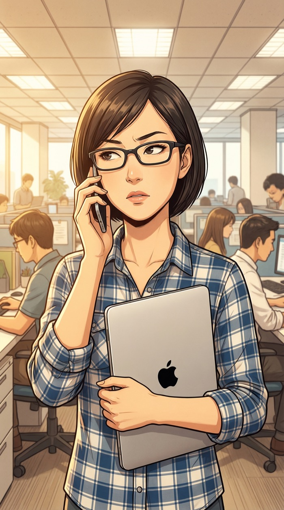
【大厂办公区 · 格子间 · 中景】
电话那头沉默了三秒。我能想象林薇的表情——推了推黑框眼镜，MacBook搁在腿上，认真思考的样子。
"你上次创业亏了30万。"
"这次不一样。我看到了未来。"
「我是真的看到了。」
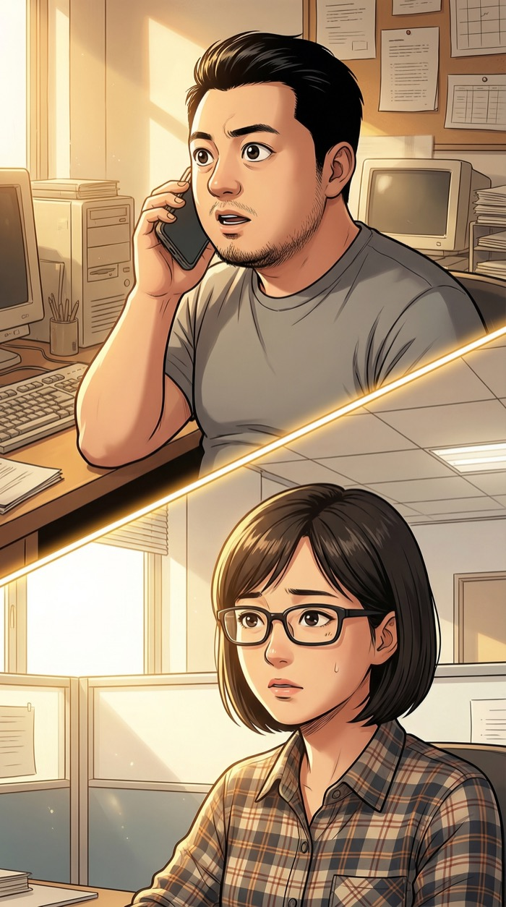
【分屏对话 · 上下两人通话】
电话打了整整四十分钟。我把产品构想讲了三遍，每一遍都更具体，更有说服力——因为我知道这条路走得通。
"行。但我有条件。"
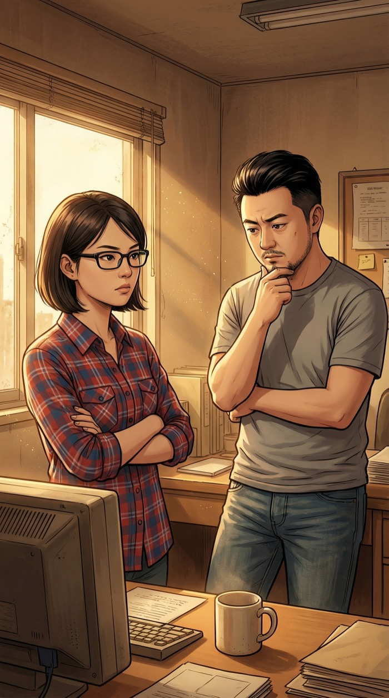
【小办公室 · 二人谈判 · 双人中景】
"技术方向我说了算。"
林薇说话从来不绕弯。她就是这样的人——清华计算机系出来的，代码比大多数人的PPT写得好。
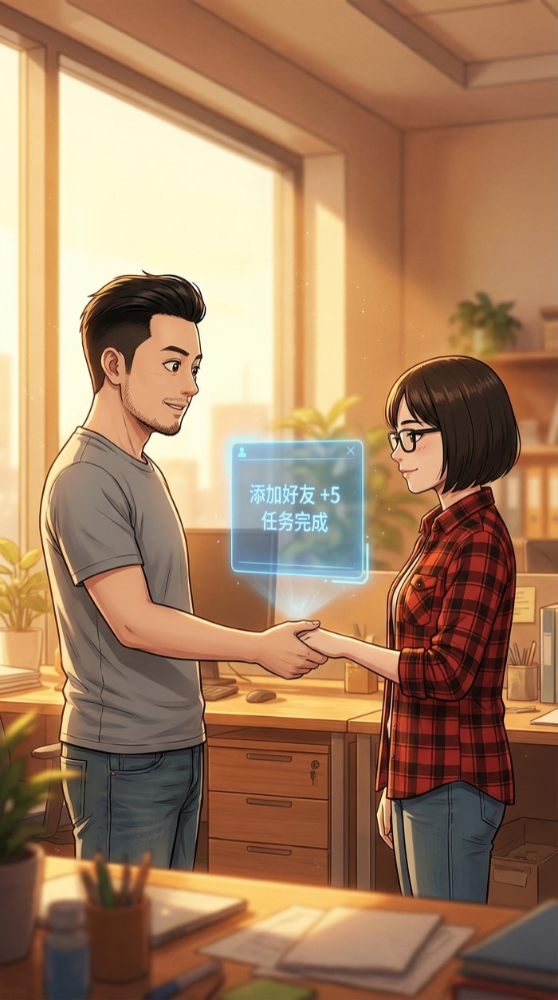
【握手特写 · 系统提示】
"技术你说了算，产品我说了算。CEO只是个title，重要的是我们各自做好自己最擅长的事。"
「合伙人信任值+15。注意：信任值低于30将触发'联合创始人出走'事件。建议宿主维护关系。不是因为关心你，只是系统日志会很难看。」
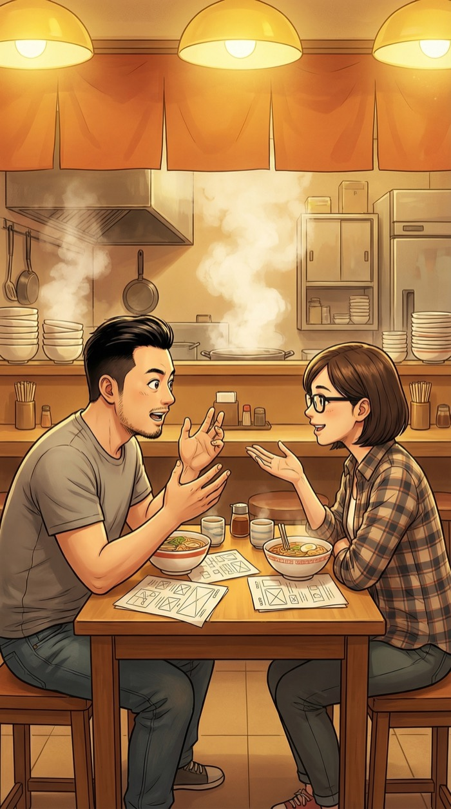
【面馆 · 暖黄灯光 · 双人远景】
晚上八点半，张江园区旁的小面馆。两碗牛肉拉面，一叠餐巾纸，和一个可能改变中国信息生态的产品方案。
"你这个推荐算法的思路……在哪看到的？2012年还没人这么做过吧？"
"灵感。纯灵感。"
「——说不出口啊。协同过滤+深度学习的推荐框架，那是2018年才成熟的技术路线。」
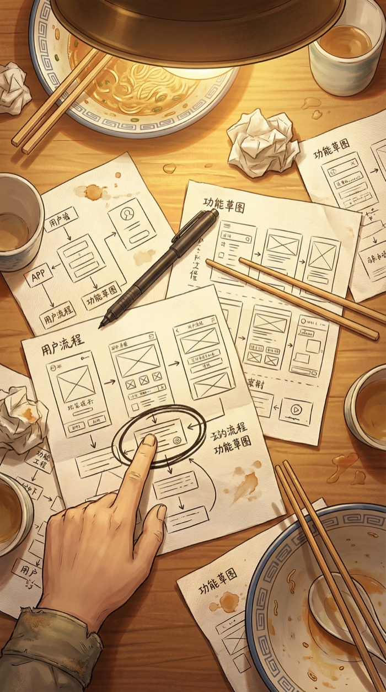
【桌面特写 · 餐巾纸草图】
餐巾纸上画满了线框图和流程图。林薇的字迹工整得像打印体，我的涂鸦只有我自己看得懂。但每一条线都指向同一个方向——一个用算法理解用户、用内容连接世界的产品。
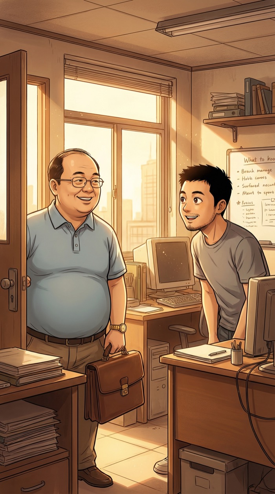
【办公室门口 · 陈涛登场 · 中景】
三天后。办公室门被敲响的时候，我正在调一个bug。
门口站着一个微胖的中年人，Polo衫，金表，皮包，笑容和蔼得像个邻居大叔。但我知道——圈内人都知道——陈涛谈起数字的时候，比任何人都精明。
"小朱啊，听说你又折腾了？我过来看看。"
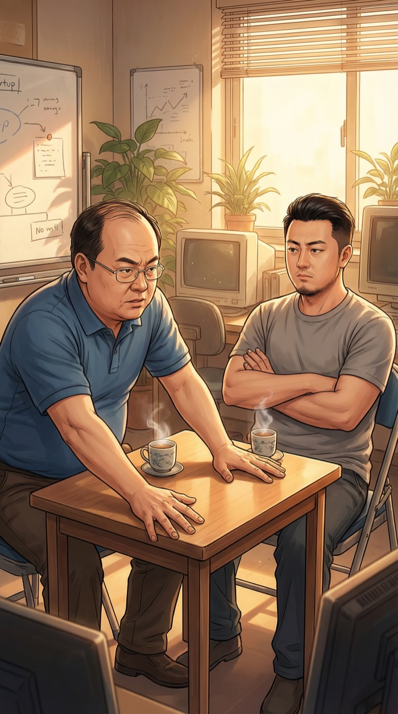
【会议桌 · 谈判双人对峙 · 中景】
"200万，51%。"
陈涛说得云淡风轻，像是在菜市场讲价。200万换51%股权——2012年的天使投资标准做法。但这意味着，我从第一天就失去了公司的控制权。
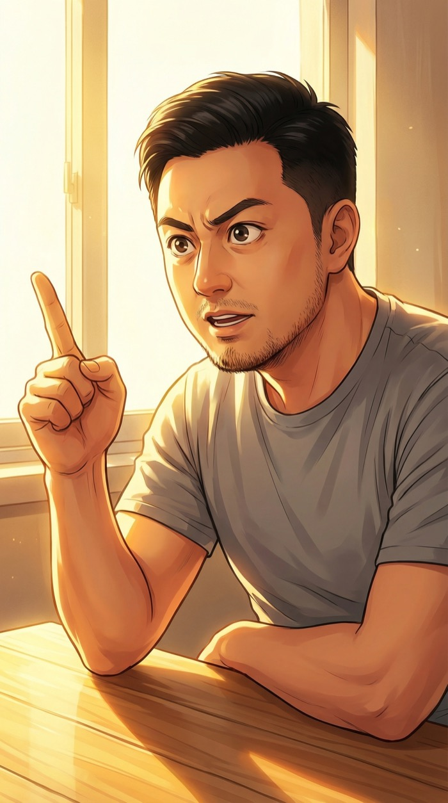
【特写3/4侧面 · 朱江反击】
"陈总，您投的不是项目。您投的是我这个人。我值这个价。"
这句话，上辈子我说不出口。但现在——我知道自己值多少。
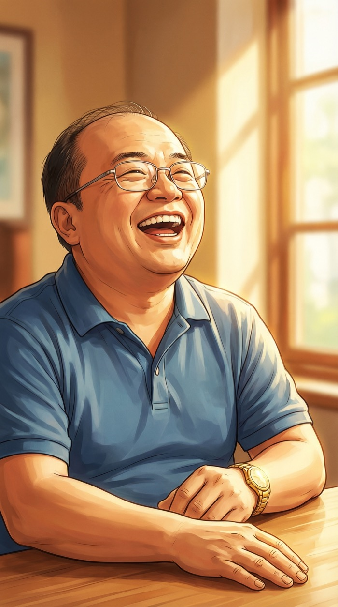
【特写 · 陈涛大笑】
"哈哈哈！小朱，你这口气……"
他笑了好一会儿，笑到眼角都是褶子。然后伸出手——
"我喜欢。成交。"
【全息系统面板 · 技能解锁】
「谈判术经验+200。当前等级提升！
解锁被动技能：创始人气场 Lv1
效果：谈判时对方好感度+10%」
「真的有经验值……这个系统到底是什么东西？」
「建议宿主少问哲学问题，多问商业问题。」
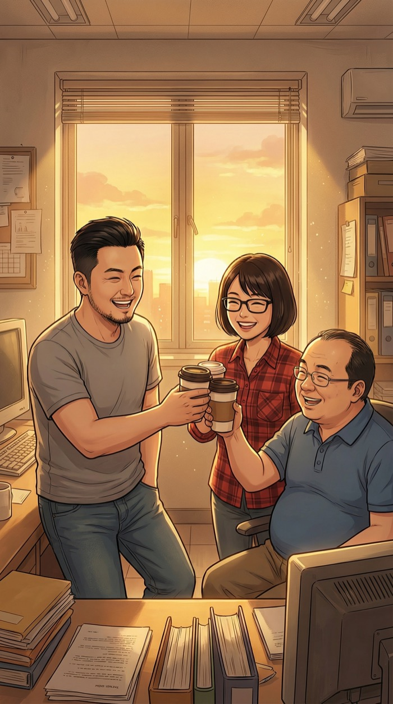
【三人举杯 · 暖色夕阳 · 远景】
纸杯碰在一起的声音很轻。窗外的夕阳把三个人的影子拉得很长。
2012年8月20日，三个人，一间办公室，200万启动资金，和一个来自未来的秘密。
「故事，从这里真正开始。」
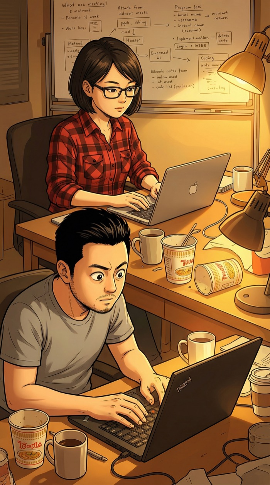
【蒙太奇 · 深夜办公室 · 双人工作】
接下来的两周是一场冲刺。白天讨论产品方案，晚上写代码到凌晨。林薇的MacBook和我的ThinkPad并排放在桌上，屏幕的光映在空咖啡杯上。
外卖盒堆了半个垃圾桶。白板上的架构图改了七版。
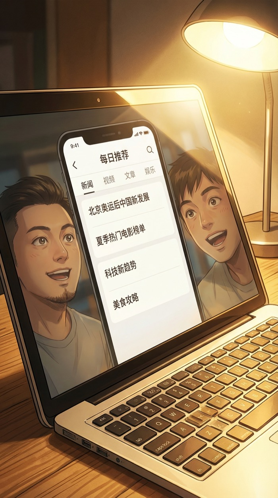
【笔记本屏幕 · 产品原型展示】
第十五天。产品原型做出来了——一个智能内容推荐App。界面简洁到有点寒碜，但推荐算法是2026年水平的降维打击。
"上线吧。"
「该来的，总会来。」
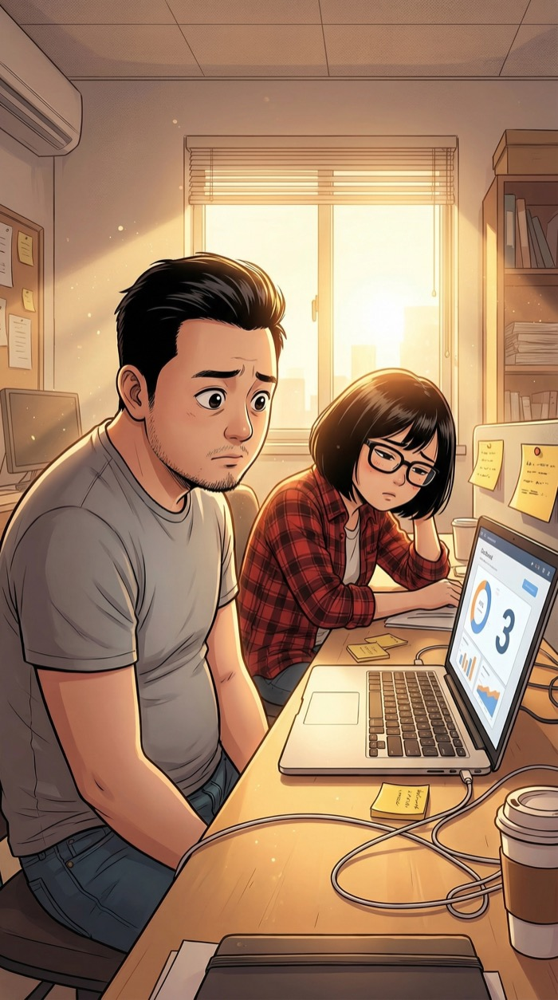
【办公室 · 清晨 · 双人中景】
上线第一天。
我们盯着后台数据看了整整一上午。日活跃用户：3。其中2个是林薇的测试号。
"……所以真实用户只有1个？"
"可能还是我自己注册的那个。"
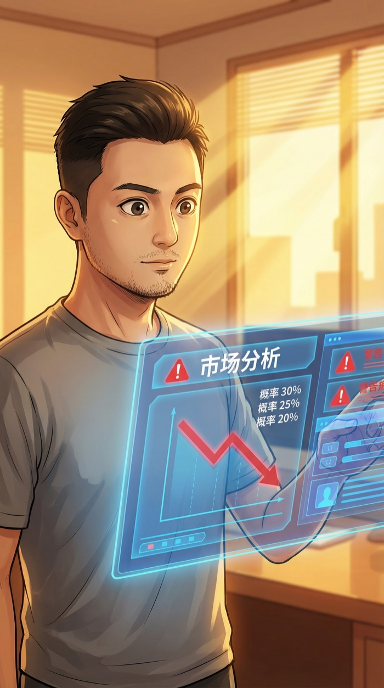
【全息分析面板 · 蓝色界面】
「冷启动失败。用户增长率：0%。按当前速度，达到种子用户规模需要……正在计算……大约10000年。」
"你能不能说点有建设性的？"
「建设性建议：换赛道。但宿主大概率不会听。」
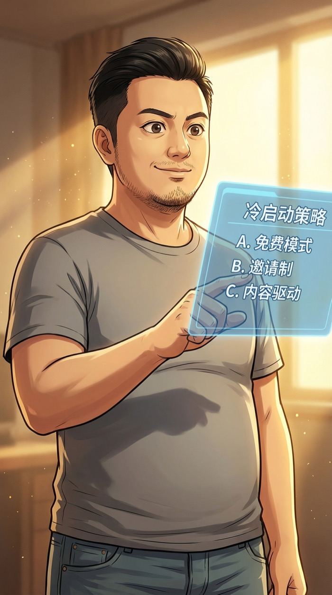
【决策面板 · 选择冷启动策略】
"先做窄做深，再做宽做广。"
「这是2026年验证过的方法论。在2012年，没有人这么想过。」
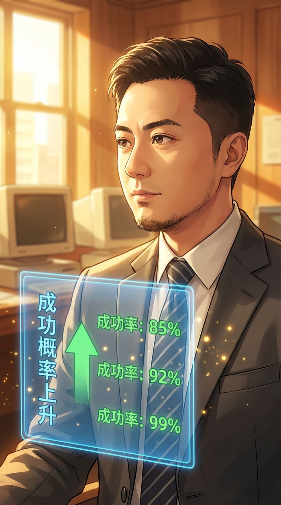
【系统概率上升 · 全息面板特写】
「战略调整已记录。目标市场缩小80%。
计算中……
成功概率：反而上升了12%。
……这不科学。但数据不会骗人。」
我盯着那个上升的百分比，第一次觉得这个毒舌系统还挺可爱的。
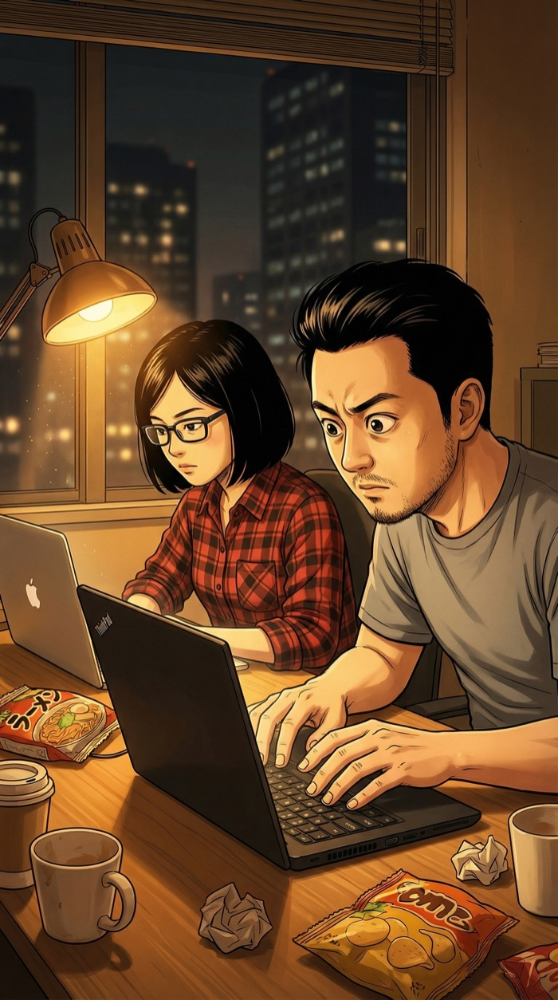
【深夜办公室 · 凌晨3点 · 暖色台灯】
连续第七天加班到凌晨三点。桌上咖啡凉了又热、热了又凉，循环了不知道多少遍。
林薇还在旁边写代码，键盘声像催眠曲。窗外张江园区一片漆黑——2012年的张江，晚上没什么人加班。
「我们可能是整条街上最后亮着灯的办公室。」
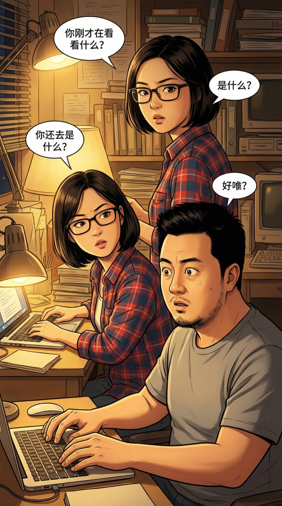
【双人夜谈 · 林薇转头质疑】
"朱江。"
林薇突然合上MacBook，转过来看着我。
"你怎么总像知道答案一样？"
我的手指停在键盘上。她目光如炬——这就是清华CS的人，观察力强得可怕。
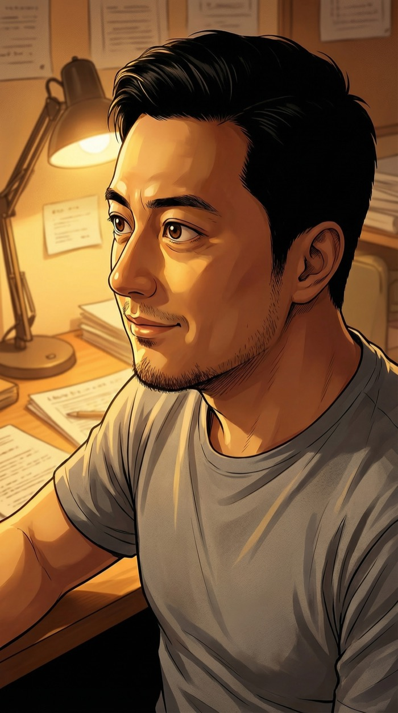
【特写侧面 · 内心挣扎】
"直觉。"
我头也不回地说。
「我不能说我来自未来。不能说我知道今日头条会在2012年成立，2018年改名字节跳动，2025年成为世界前三的互联网公司。我什么都不能说。」
台灯的光打在我脸上。有些秘密，注定要一个人扛。
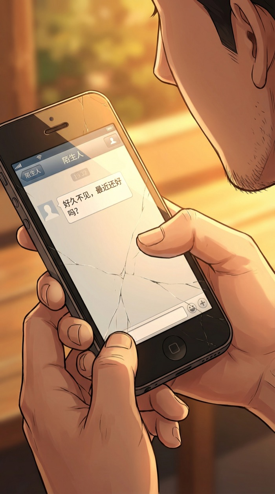
【手机特写 · 可疑私信】
又一个睡不着的深夜。手机震了一下——一条陌生人的私信。
"朱总好，我是XX大厂的产品经理，很欣赏你们的产品，想聊聊。"
「这个说辞，和上辈子竞品来套方案时一模一样。」
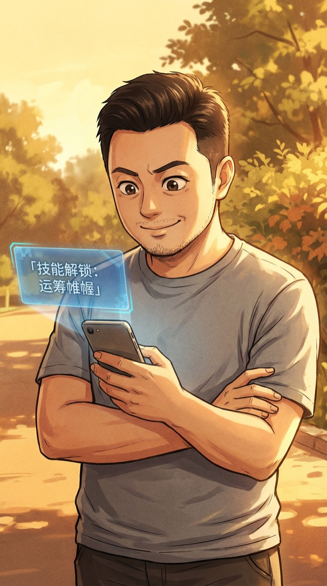
【中景仰拍 · 反情报战 · 技能解锁】
「新技能解锁：情报战 Lv1
效果：识别商业间谍概率+25%」
我对着手机屏幕，慢慢打出一段精心设计的"坦诚回复"——每一个字都是诱饵。
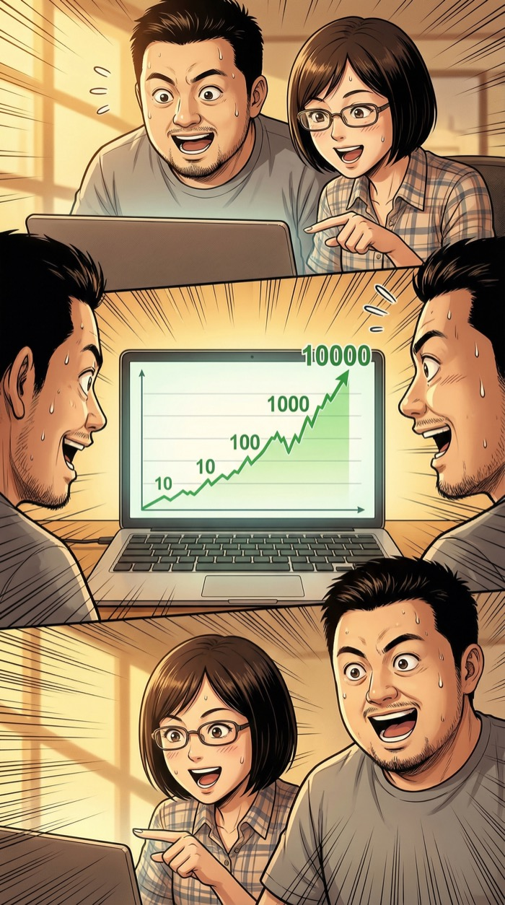
【增长蒙太奇 · 数据飞升】
垂直策略见效了。科技圈的种子用户开始自发传播——"你用过那个推荐引擎吗？推的东西比我自己找的还准。"
后台数据曲线从平躺变成了陡坡。3→30→300→3000。
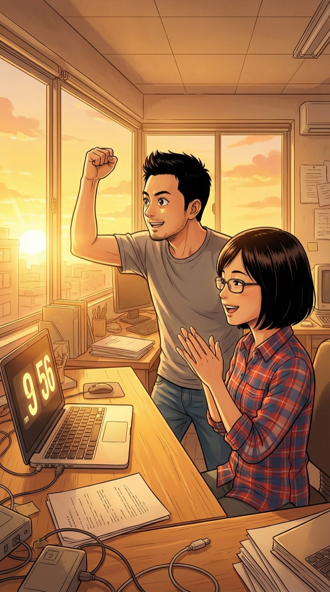
【庆祝 · DAU 3000 · 双人远景】
"三千！三千日活！"
林薇难得露出了没带职业面具的笑容。我差点以为自己看错了。
「恭喜宿主达成里程碑：日活3000。距离下一个里程碑（30000）还有很长的路。别飘。」
"你就不能让我高兴一分钟？"
「59秒已过。」
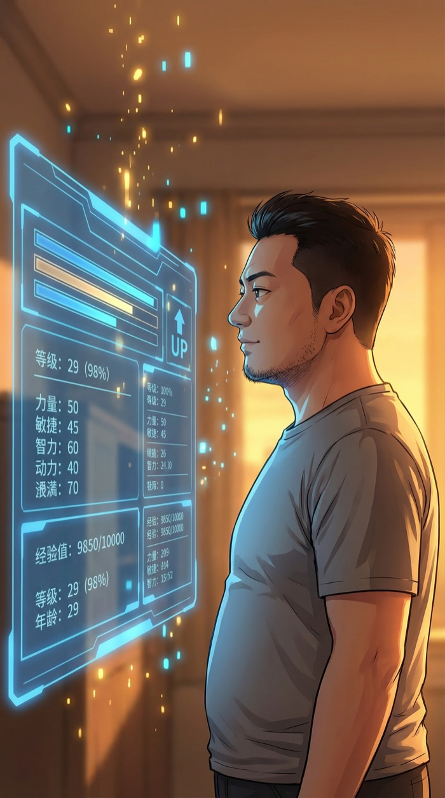
【全息面板 · 成长记录】
「阶段性总结——
商业直觉: S → S+
谈判术: Lv1 → Lv2
情报战: Lv1
创始人气场: Lv1
团队信任值: 72/100
当前估值: 约1500万
评价：比预期好。别骄傲，更大的挑战还在后面。」
「更大的挑战……我知道它在说谁。」
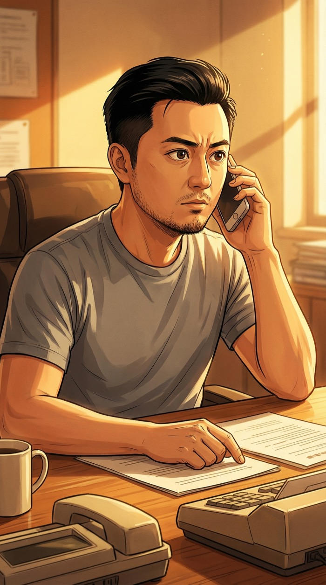
【办公室 · 接电话 · 中景】
一个普通的下午。阳光很好，心情很好，数据很好。然后陈涛打来了电话。
"小朱，有个好消息和一个坏消息。好消息是有A轮投资人看上你们了。"
"坏消息呢？"
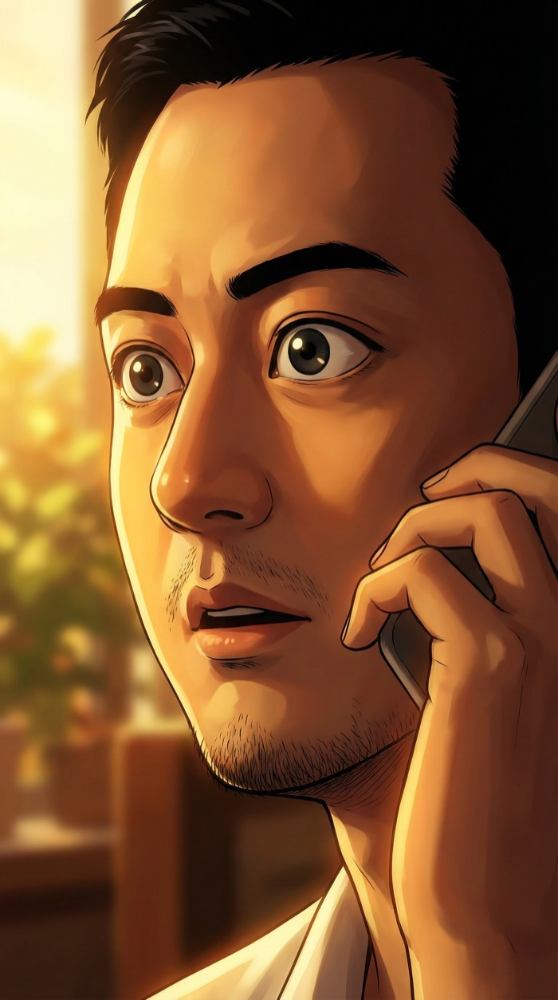
【极端特写 · 表情变化】
"坏消息是……投资人是张一鸣。他在做一个一模一样的东西。"
我握着手机的手，微微用力了一点。
「来了。该来的终于来了。」
「今日头条——2012年8月创立，2018年日活超过2亿的超级产品。而它的创始人，是整个中国互联网最被低估的天才之一。」
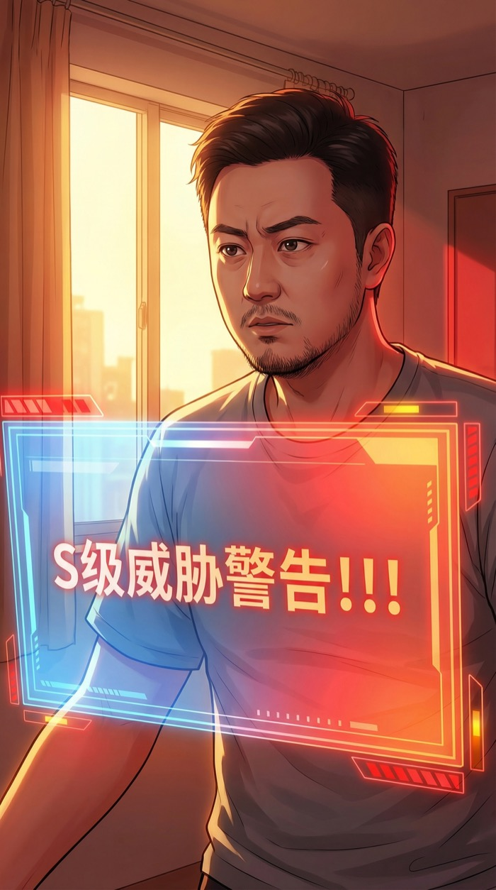
【全息面板 · S级红色警告】
「⚠️ S级威胁检测
威胁来源：未来独角兽即将入场
威胁等级：S
生存概率：急剧下降中……
建议行动：——数据不足，无法计算——」
系统面板变成了红色。这是我第一次看到它没有毒舌，没有吐槽——它真的算不出来。
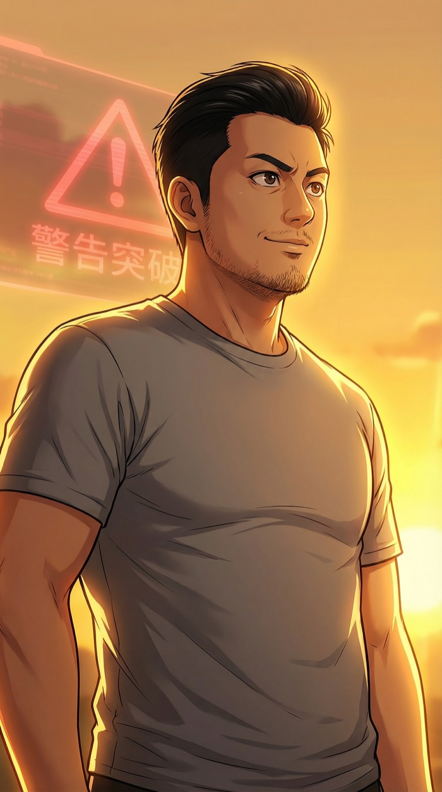
【仰拍 · 自信笑容 · 英雄光】
我把手机收进口袋，抬起头看着窗外的天空。
嘴角慢慢翘了起来。
"有意思。"
「张一鸣。这一次，我不会输。因为我知道你的每一步棋——而你，对我一无所知。」
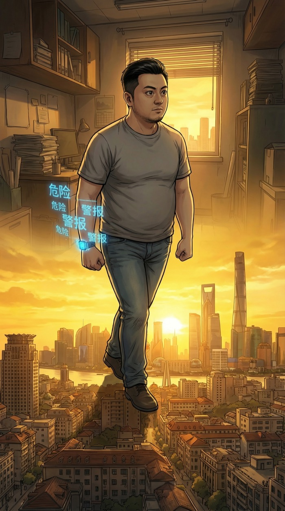
【远景 · 窗前剪影 · 2012上海黄昏 · 全章结束】
夕阳把我的影子投在地板上，拉得很长、很长。窗外的张江园区华灯初上，每一盏灯背后都是一个创业者的野心和梦想。
手腕上的全息手环安静地闪着蓝光。红色警告还在，但我不怕。
我来自未来。我知道风暴要来。
但这一次——
"这一次，我就是风暴。"